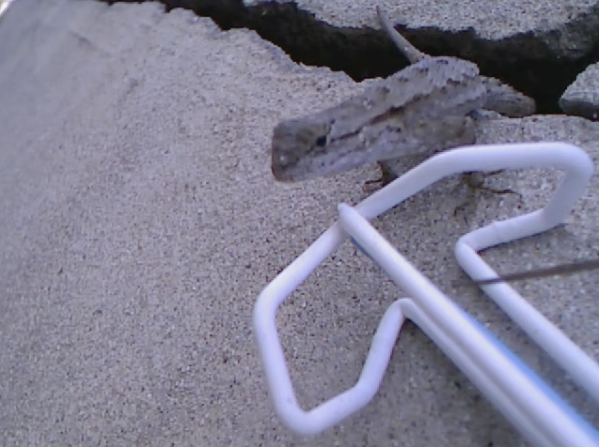
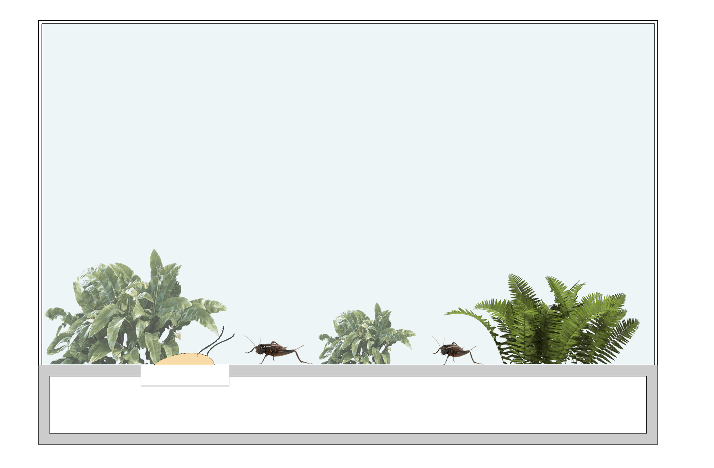

k // a
KAREN EL ASMAR
Week 4
Assignment Brief:
Understand enrichment and its purpose around promoting natural behavior and improving animal welfare. Search for methods of achieving enrichment (environment, physical structure, feeding methods etc.) and for modes to get there. Choose an animal that you are already very familiar with or would like to commit and learn about. Post two brief enrichment proposals.
Enrichment I:
“Enrichment is an animal behavior principle that seeks to enhance the quality of captive animal care by identifying and providing the environmental stimuli necessary for optimal psychological and physiological well-being.”
Enrichment usually refers to the fact that when an animal is put in captivity, no matter how naturalistic their environment is, we often take away from this animals natural behaviors and hence, well-being. By controlling every facet of the animal’s life, we limit their ability to use their senses and adaptation to “earn” their living the way they would have done so in the wild.
Individual Project

Insect Enrichment & Motivation
The animal I chose to enrich is a cricket. When looking at enrichment from the above perspective, it is obvious that insect enrichment is not at all crucial as the enrichment of other animals. In fact, ironically, crickets are often used in enrichment methods for other animals. Yet, despite all that, I think crickets deserve and can, as well, benefit from enrichment in their new environments.
We often see crickets as unclever and disgusting creatures that we have to get rid of; we often rush to spray them, step on them or kill them as soon as one captures our eyes. Yet, in some different regions, crickets are believed to be embodiments of the souls of loved ones, thought to bring good luck, thought of as signs of impending rains, money, death and even serve as protection for the home from evil spirits. Raising crickets as pets is, hence, not so uncommon in many regions of the world. Moreover, crickets are widely put in captivity in labs to experiment on for research purposes as well as raised harshly in cricket farms all over the world for their ability to efficiently convert their food into body mass, making them a great nutrient source, whether for humans or as prey for many other animals. Also, mainly at zoos and as pets, when we put crickets in captivity, we become in control of when these crickets are allowed to eat, we plan and curate when they should or shouldn’t mate and even decide with whom they are allowed to socialize. For this, providing these species with experiences designed to stimulate certain behaviors is important to ensure these crickets act naturally, despite all this control.
Crickets are and will always remain essential to our ecosystems for their ability to break down plant materials and renew soil minerals and for serving as an important food source for many other animals. For all this, I am interested in “digging” into the micro-world of these insects, learn their behaviors and find ways to enrich them.
Precedents of Insect Enrichment
1. Artificial Flowers(Matile Boelhouwer) & Synthetic Polleniser(Michael Candy)
In the first project, the artist designed a series of artificial flowers that turn rain into sugar water, to serve as emergency food sources for city-dwelling insect pollinators. The artist observed the relationship of insects with flowers and watched how urbanization and climate change are affecting the abundance of food for these insects and hence, proposed this artificial system that would attract the insects. The type, shape, color and “central containers” of each flower are customized to the common preferences, eyesight and tongue length of different species of insects,
Similarly, in the second project, the artist proposed a method of artificial pollination using 3D-printed robotic flowers, in a bid to help increase the dwindling bee population. The flowers are all equipped with pollen and nectar. They are designed to be installed alongside real plants, to encourage bees to pollinate.


2. The Gap Crack Gang - Ian Ingram
Although not for insects, Ian Ingram designed a robot that looks for the territorial pushup signals of the three Western Fence Lizards and then responds with similar pushup gestures to declare the crack as its own territory. This is a very interesting example where a simple movement of an object in nature can stimulate and trigger the lizards to feel threatened and respond in a similar way.

3. Enriching cockroaches - Fenner Nature Center
The Fenner Nature Center believe that although theirMadagascar Hissing Cockroaches require little in terms of enrichment, they still provide them with just as many chances to demonstrate their typical behaviors. Their habitat design places a high priority on climbing space to allow the cockroaches to display dominant behaviors by climbing higher than the other cockroaches. For feeding, the roaches are offered fruits and veggies regularly to replenish lost moisture and nutrients.
4. Cyborg Insects
Apart from being used to study behaviors of insects, robotic insects are being developed by scientists and researchers to observe how a robot can infiltrate colonies and influence behavior of the group. Studies show that such designs can help guide insects to do certain things either for the benefit of humans or for their own benefit, which makes it a valuable technique for enrichment. An example of this might be the bee bots that could protect pollinating bees against mites or even keep a hive updated with weather forecasts by releasing pheromones to prevent a new brood hatching when bad weather is likely to prevent foraging. Moreover, robots are also being used to encourage groups of animals to do things they normally would not: a robo-roach can trick cockroaches into venturing into the light, for example.
So, What’s Interesting About Crickets?
Background Information
- Found worldwide and live in almost every environment.
- Can jump 20 to 30 times their height
- Nocturnal insects
Senses
- Use their eyes to detect light and shadow
- Use their long antennae to sense things around and to detect smells
- Hear with their legs
Territorial
- Only male crickets sing and fight
- Sing to attract a mate or to signal other males to leave his territory
- Sing with their wings
- Chirps determined partly by the weather: the warmer it is, the quicker the chirp
Aggression
Aggression is one of the most common types of behavior in animals and crickets are by far, no exceptions. Probably one of their most important characteristics, actually, is that crickets are normally very aggressive, male crickets in specific towards others of the same species. This intra-specific aggression is a widespread behavioral strategy in the animal kingdom, which is generally thought of as serving to optimize an animal’s chances of securing limited resources at minimal risk of injury or cost. Apart from exhibiting intensive aggressive behavior when they encounter another male, male crickets show courtship behavior when encountering another female. This ability to display aggression in crickets is a crucial behavior for their survival and their wellbeing since crickets live in communities defined by conflicts between individuals, usually to gain access to territories, resources and mates. It is a way for crickets to display their strength and to attract females since female crickets prefer dominant males - it is usually the winner of a fight who gets to mate with the female.
Also, studies and experiments show that crickets act differently when others are watching. Males usually fought more violently and put on more grandiose victory dances when a male or a female was watching and listening than when they had no audience at all. Moreover, studies from the same experiment showed that wild males responded more strongly overall to an audience than did lab-reared crickets. This suggests that when crickets are put in isolation, they did not have enough social exposure to other crickets to expose this natural instinctive behavior.
Cricket Fights
Moreover, researching further into this specific aggressive behavior and more generally into cricket fights, I stumbled upon articles that showed how a cricket’s aggressive behavior has made it a popular candidate for a unique type of sport: “cricket fighting”. This “sport” is famous in different regions of the world, specifically in China. It is so famous that there even exists cricket fighting clubs, cricket societies and people whose only jobs are to watch over and prepare these crickets for fights. In china, a cricket culture encompasses a history of 2000 years and goes back to the Tang Dynasty(500 B.C. - 618 A.D.). Initially, crickets were appreciated for only their tunes and were put in small cages next to beds to hear their singing during the night. Further along the road, cricket fighting flourished as a sport wherein two cricket are placed in a small fighting “arena” to fight. Cricket trainers stimulate their charges with a straw or a fine-haired brush and then the insect “warriors” start the fight by waving their antennae and snapping their jaws. The tradition has ancient roots and has been handed down throughout the generations to the present day.
What’s specifically interesting about these crickets is that they crickets are normally “trained” and provided with the “proper enrichment” before fights. Normally, crickets were put on a diet which ranged from rice mixed with fresh cucumbers, boiled chestnuts, lotus seeds, and mosquitoes to chopped fish, worm, wood, melon pulp and even honey. Sometimes, meals are even customized. For example, in China, a caretaker feed his "fighters” with special meals he invented. He also gives them showers and fight training. His crickets are kept in special jars equipped with a bed, feeder and a water bucket. He also does not forget to mate his warriors with female crickets as he believes it helps the male fighters relax before the fighting. After his daily routine, he spends the rest of his time observing and selecting the best ones by looking at their color, listening to their singing and watching their movements.
Guiding Questions
Hence, to come up with my proposals, I asked the following questions to guide my thoughts:
“What does it mean for a cricket to win or lose a fight?”
“How do other crickets perceive the result of a fight?“
“If cricket aggression is so natural and a cricket fight is so popular, is there a specific process, approach or even a specific set of rules in cricket fights?”
Proposal 1 - “Help me mate, mate!”
Category: Social Interactions: Fights and Finding Mates
 My first proposal is called WingMe. WingMe is a “wingbot” who acts as a proper wingman and whose main goal is to help a cricket friend approach potential romantic partners. Mating helps crickets reset their aggression and hence, is very important for their wellbeing. WingMe knows what’s happening. For this, WingMe sacrifices their ego to make their friend look big and powerful to potentially impress any lovers close-by. The way this happens is that WingMe starts by triggering their male friend to fight. Half-way through the fight, WingMe remembers that their main aim is to be defeated and thus, gives up, stops the fight and turns away, leaving their friend celebrating their defeat and if lucky enough, impressing a female enough to mate with.
WingMe: The Cricket Wingbot
“Wing·bot”
noun: wingbot; plural noun: wingbots
“a cricket bot who helps or supports another cricket; a friend or close associate.”
Proposal 2 - “Fly it, I’m outta here!”
Category: Social Interactions: Fights, Flights and Recovery
There are many reasons and situations where males meet, but one or both of them decide to flee or avoid each other instead of fight. Studies show that this behavior is related to the neurobiological mechanisms underlying cricket aggression, specifically, it is related to the roles of biogenic amines and nitric oxide in the cricket. Yet once a fight between two crickets has been decided, it’s certain that crickets will fight until one of them loses and the other one wins. Winning a fight triggers a certain reaction in a cricket’s body that makes them “sing”(chirp) and dance(jerk) and they are also more likely to win their next encounter. This is known as the winner effect.
However, when a cricket loses, they exhibit avoidance behavior(running away from other crickets), lose their motivation to interact with others and show way less interest and ability to fight again, sometimes for even up to 12 hours. Researching further into this, I also discovered studies that show that this loser effect can be erased and aggressive motivation reset simply by allowing the insect to fly for a short period of time. Even though crickets have wings, most of them do not fly and hence, researches have used wind tunnels to force these crickets to fly after a defeat to restore aggressiveness and help them recover much faster. This discovery was actually inspired by “folk science” in ancient China where these crickets were raised for fight.
Being inspired by this, I propose to enrich these crickets in their low, depressive times and help them recover faster. My proposal, MotherBooster, is an environmental enrichment bot that watches over all the crickets in a certain environment and makes sure none of them is feeling depressed. It does so by using computer vision to recognize body movements and social interactions between crickets, by using audio to recognize the type of chirping and by analyzing the time spent during a social interaction to see whether it was a losing or an avoidance case. In the case of a loss, MotherBooster, triggers wind from beneath the cricket to push it upwards and make it fly for a certain period of time before it brings it back down.
Precedent:
This “mass bug surveillance machine” is inspired from a research project called “Big Bug Brother” whose aim is to study crickets to better understand evolution and possibly to be able to answer some “big questions” in evolutionary biology. This study uses a software developed for wildlife: icatcher and a network of 140+ CCTV cameras running 24/7 during the cricket breeding season to study and record every movement of adult “numbered” crickets: who they meet, whether they mate, fight or run away, and how long it takes before a bird gobbles them up.
References
Hitti, Natashah.“Matilde Boelhouwer Designs Artificial Flowers to Feed Urban Insects.” Dezeen, 12 Nov. 2018, www.dezeen.com/2018/11/12/matilde-boelhouwer-artificial-flowers-feed-urban-insects/.
Yalcinkaya, Gunseli. “Synthetic Polleniser Could Help Depleting Bee Population.” Dezeen, 19 Feb. 2018, www.dezeen.com/2018/02/19/michael-candy-synthetic-pollensier-help-depleting-bee-population-technology/.
Ingram, Ian. “The Gap Crack Gang .” Ian Ingram, 2013, www.ianingram.org/machines/2013_gapcrack.html.
Center, Fenner Nature. “Fenner Nature Center.” Animal Enrichment, 1 Jan. 1970, mynaturecenter.blogspot.com/2014/04/animal-enrichment.html.
Brewster, Signe. “Robots Infiltrate Insect World to Learn Their Ways.” New Scientist, New Scientist, www.newscientist.com/article/2082786-robots-infiltrate-insect-world-to-learn-their-ways/.
Williams, Caroline. “Summon the Bee Bots: Can Flying Robots Save Our Crops?” New Scientist, New Scientist, www.newscientist.com/article/mg22029430-600-summon-the-bee-bots-can-flying-robots-save-our-crops/.
Simonite, Tom. “Robo-Roach Could Betray Real Cockroaches.” New Scientist, New Scientist, www.newscientist.com/article/dn9136-robo-roach-could-betray-real-cockroaches/.
“Sonorous Science: Have a Cricket Tell You the Temperature!” Scientific American, www.scientificamerican.com/article/bring-science-home-cricket-temperature/.
Gutierrez, D.M. “Cricket Habitat.” Sciencing.com, Sciencing, 10 Jan. 2019, sciencing.com/cricket-habitat-5439194.html.
“Wind Tunnel System for Insect Flight Studies.” Noldus, 3 Jan. 2018, www.noldus.com/animal-behavior-research/products/track3d/windtunnel.
Sakura, Midori, and Hitoshi Aonuma. “Aggressive Behavior in the Antennectomized Male Cricket Gryllus Bimaculatus.” Journal of Experimental Biology, The Company of Biologists Ltd, 15 June 2013, jeb.biologists.org/content/216/12/2221#ref-24.
“Big Bug Brother.” Wild Crickets: Evolution in Nature, www.wildcrickets.org/big-bug-brother.html.
“Crickets Act Differently When Others Are Watching.” National Geographic, National Geographic Society, 9 July 2013, news.nationalgeographic.com/news/2013/07/130709-crickets-science-animals-audience-learning/.
Kyung-Hoon, Kim. “Little Gladiators: China's Cricket Fighting.” Reuters, Thomson Reuters, 10 Oct. 2013, blogs.reuters.com/photographers-blog/2013/10/10/little-gladiators-chinas-cricket-fighting/.
Killian, Kathleen A, and Janelle R Allen. “Mating Resets Male Cricket Aggression.” Https://Www.researchgate.net/Publication/225435474_Mating_Resets_Male_Cricket_Aggression, Research Gate, www.researchgate.net/publication/225435474_Mating_Resets_Male_Cricket_Aggression.
Stevenson, Paul A., and Jan Rillich. The Decision to Fight or Flee – Insights into Underlying ...www.ncbi.nlm.nih.gov/pmc/articles/PMC3424502/.